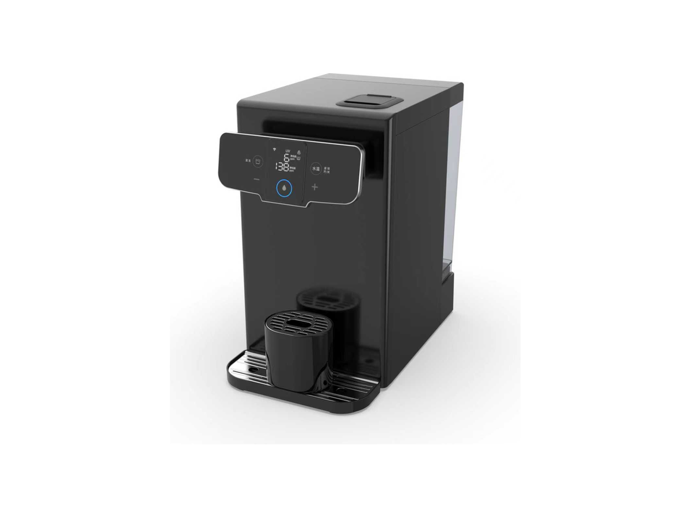

سطح الطاولة
سطح الطاولةRP-C07
منقّي RO مع إبريق تسخين
SKU: RP-C07
MOQ: يُؤكَّد عند الاستفسار
الرئيسية/المنتجات/أنظمة سطح الطاولة/ RP-C15

أنظمة سطح الطاولة
عائلة سطح العمل للمياه الغازية والهيدروجينية (P90 / P90-1) — متغيران، صفحة واحدة.
RP-C15 هي عائلة منقّيات RO لسطح الطاولة بمتغيرين. P90 هو موديل المياه الغازية: مياه غازية ومثلجة وساخنة من جهاز واحد. وP90-1 هو موديل ماء الهيدروجين: ماء غني بالهيدروجين مع مياه مثلجة وساخنة. وكلاهما مبرّد بالضاغط، ويستخدمان ترشيح RO مع تعقيم بالأشعة فوق البنفسجية، ويعملان بخزان مدمج أو وصلة سباكة. وتُؤكد المواصفات لكل موديل وطلب.
المواصفات أدناه مذكورة لكل متغير — موديل المياه الغازية P90 أولًا، ثم موديل المياه الهيدروجينية P90-1. جميع الأرقام مأخوذة من أوراق مواصفات الشركة المصنعة.
متغيران في هذه الصفحة — موديل المياه الغازية P90 وموديل المياه الهيدروجينية P90-1.
الجهد / التردد قابل للتكوين حسب بلد الوجهة. تُؤكد التكوينات الأخرى لكل طلب.
RP-C15 هي عائلة منقّيات RO لسطح الطاولة بمتغيرين: P90، موديل المياه الغازية، وP90-1، موديل ماء الهيدروجين. ويقدم P90 مياهًا غازية ومثلجة وساخنة من جهاز واحد؛ ويقدم P90-1 ماءً غنيًا بالهيدروجين مع مياه مثلجة وساخنة. وكلاهما مبرّد بالضاغط، ويستخدمان ترشيح RO مع تعقيم بالأشعة فوق البنفسجية، ويعملان بخزان مدمج أو وصلة سباكة.
ما الحد الأدنى لكمية الطلب؟
الحد الأدنى لطلب P90-1 هو 300 وحدة، كما هو مذكور في هذه الصفحة. والحد الأدنى لطلب P90 يُؤكد لكل طلب.
هل يمكنني طلب عينة قبل طلب بالجملة؟
نعم. العينات جاهزة خلال 15 يومًا، وتُسترد رسوم العينة عند أول طلب بالجملة. يستغرق أول طلب إنتاج ضخم لـ P90-1 حوالي 45 يومًا، كما هو مذكور في هذه الصفحة. تُشحن الطلبات FOB Shenzhen.
كم تدوم فلاتر P90-1؟
كما هو مذكور في هذه الصفحة: الفلتر المركّب يدوم نحو 6 أشهر وغشاء RO يدوم 12 شهرًا؛ ومصباح الأشعة فوق البنفسجية يدوم 10,000 ساعة.
مرّر فوق صورة متغير لرؤية مواصفاته. على الشاشات اللمسية، انقر على صورة.


فيديو منتج P90.
فيديو منتج P90-1.
المواصفات الكاملة لكل موديل، جنبًا إلى جنب. تُظهر جداول المواصفات أدناه قيم كل موديل.
| المواصفة | RP-C15-1 — مياه غازية (P90) | RP-C15-2 — ماء الهيدروجين (P90-1) |
|---|---|---|
| نوع المنتج | منقّي RO لسطح الطاولة مع مياه غازية ومياه مثلجة وماء ساخن | منقي RO لماء الهيدروجين لسطح العمل |
| غشاء التناضح العكسي | 100G | 100 GPD |
| الترشيح | فلتر أولي من الفولاذ المقاوم للصدأ + مركّب + RO، مع تعقيم UV | PP/C + RO + UV |
| خزانات المياه | 4 L ماء خام / 1.3 L ماء نقي / 0.2 L ماء فوار | ماء خام 4 L؛ مياه صرف 1 L (حجرة مشتركة)؛ ماء نقي 1.3 L |
| مصدر المياه | وضع مزدوج — خزان أو توصيل بالشبكة | يُؤكد حسب الطلب |
| إعدادات درجة الحرارة | حرارة الغرفة، مثلج، 25 °C، 50 °C، 80 °C، 95 °C | يُؤكد حسب الطلب |
| التسخين والتبريد | يُؤكد حسب الطلب | ماء ساخن + ماء مثلج (حسب الموديل) |
| الماء الساخن | 24 L/h (≥ 90 °C) | يُؤكد حسب الطلب |
| المياه المثلجة | ≤ 10 °C, 1 L/min | يُؤكد حسب الطلب |
| المياه الغازية | 187 mL/min، بلمسة واحدة (170 mL لكل حصة) | يُؤكد حسب الطلب |
| معدل تدفق وحدة الهيدروجين | يُؤكد حسب الطلب | 60 mL/min |
| الهيدروجين المذاب | يُؤكد حسب الطلب | 1500 ppb (ماء هيدروجيني محيطي)؛ 1900 ppb (ماء هيدروجيني مثلج) |
| أحجام التوزيع | 250 / 350 / 550 mL | يُؤكد حسب الطلب |
| معدل تدفق التوزيع | يُؤكد حسب الطلب | 1 L/min |
| معدل إنتاج المياه | يُؤكد حسب الطلب | 270 mL/min |
| الحجم المقنن للمياه المنقاة | يُؤكد حسب الطلب | 2000 L |
| نسبة المياه النقية إلى التصريف | يُؤكد حسب الطلب | 1:1 |
| عمر خدمة الفلتر | يُؤكد حسب الطلب | فلتر مركّب حوالي 6 أشهر؛ غشاء RO لمدة 12 شهرًا |
| عمر خدمة مصباح UV | يُؤكد حسب الطلب | 10,000 ساعة |
| الشاشة | TDS (المدخل والمخرج)، تذكير بعمر الفلتر | يُؤكد حسب الطلب |
| مستوى الضوضاء | أقل من 45 dB | يُؤكد حسب الطلب |
| الهيكل | سبائك (أسود / أبيض / أزرق داكن؛ ألوان مخصصة متاحة) | سبائك معدنية (أسود / أبيض؛ ألوان مخصصة متاحة) |
| الأبعاد | 420 × 244 × 450 mm | 243 × 463 × 415 mm |
| الوزن الصافي | 12.8 kg | 16.8 كغ (طراز الهيدروجين مع الثلج والماء الساخن)؛ 14.5 كغ (طراز الهيدروجين مع الثلج) |
| القدرة | 2050 W | 1450 W |
| الجهد / التردد | قابل للتكوين حسب بلد الوجهة | قابل للتكوين حسب بلد الوجهة |
| MOQ | يُؤكد حسب الطلب | 300 وحدة |
| مدة التسليم (أول طلب كمي) | يُؤكد حسب الطلب | حوالي 45 يومًا |
صفوف مواصفات موديل المياه الغازية P90، من ورقة مواصفات الشركة المصنعة.
| نوع المنتج | منقّي RO لسطح الطاولة مع مياه غازية ومياه مثلجة وماء ساخن |
|---|---|
| غشاء التناضح العكسي | 100G |
| الهيكل | سبائك (أسود / أبيض / أزرق داكن؛ ألوان مخصصة متاحة) |
| خزانات المياه | 4 L ماء خام / 1.3 L ماء نقي / 0.2 L ماء فوار |
| إعدادات درجة الحرارة | حرارة الغرفة، مثلج، 25 °C، 50 °C، 80 °C، 95 °C |
| أحجام التوزيع | 250 / 350 / 550 mL |
| الماء الساخن | 24 L/h (≥ 90 °C) |
| المياه المثلجة | ≤ 10 °C, 1 L/min |
| المياه الغازية | 187 mL/min، بلمسة واحدة (170 mL لكل حصة) |
| الترشيح | فلتر أولي من الفولاذ المقاوم للصدأ + مركّب + RO، مع تعقيم UV |
| مصدر المياه | وضع مزدوج — خزان أو توصيل بالشبكة |
| الشاشة | TDS (المدخل والمخرج)، تذكير بعمر الفلتر |
| مستوى الضوضاء | أقل من 45 dB |
| الأبعاد | 420 × 244 × 450 mm |
| الوزن الصافي | 12.8 kg |
| القدرة | 2050 W |
| الجهد / التردد | قابل للتكوين حسب بلد الوجهة |
صفوف مواصفات موديل المياه الهيدروجينية P90-1، من ورقة مواصفات الشركة المصنعة.
| نوع المنتج | منقي RO لماء الهيدروجين لسطح العمل |
|---|---|
| معدل تدفق التوزيع | 1 L/min |
| معدل إنتاج المياه | 270 mL/min |
| معدل تدفق وحدة الهيدروجين | 60 mL/min |
| الهيدروجين المذاب | 1500 ppb (ماء هيدروجيني محيطي)؛ 1900 ppb (ماء هيدروجيني مثلج) |
| الترشيح | PP/C + RO + UV |
| سعات الخزانات | ماء خام 4 L؛ مياه صرف 1 L (حجرة مشتركة)؛ ماء نقي 1.3 L |
| غشاء التناضح العكسي | 100 GPD |
| الحجم المقنن للمياه المنقاة | 2000 L |
| عمر خدمة الفلتر | فلتر مركّب حوالي 6 أشهر؛ غشاء RO لمدة 12 شهرًا |
| عمر خدمة مصباح UV | 10,000 ساعة |
| التسخين والتبريد | ماء ساخن + ماء مثلج (حسب الموديل) |
| نسبة المياه النقية إلى التصريف | 1:1 |
| الهيكل | سبائك معدنية (أسود / أبيض؛ ألوان مخصصة متاحة) |
| الأبعاد | 243 × 463 × 415 mm |
| الوزن الصافي | 16.8 كغ (طراز الهيدروجين مع الثلج والماء الساخن)؛ 14.5 كغ (طراز الهيدروجين مع الثلج) |
| القدرة | 1450 W |
| الجهد / التردد | قابل للتكوين حسب بلد الوجهة |
| MOQ | 300 وحدة |
| مدة التسليم (أول طلب كمي) | حوالي 45 يومًا |
المواصفات مأخوذة من كتالوج ROPureOEM. وعندما لا تكون القيمة مؤكدة بعد، تُدرج على أنها «مؤكدة لكل طلب» — ونحن لا ننشر أرقامًا غير مؤكدة.
سطح الطاولةمنقّي RO مع إبريق تسخين
SKU: RP-C07
MOQ: يُؤكَّد عند الاستفسار
 سطح الطاولة
سطح الطاولةمنقّي سطح طاولة بخرطوشة متكاملة
SKU: RP-C08
MOQ: يُؤكَّد عند الاستفسار
 سطح الطاولة
سطح الطاولةمنقّي RO مع ثلج وماء ساخن وبارد
SKU: RP-C09
MOQ: يُؤكَّد عند الاستفسار
 سطح الطاولة
سطح الطاولةRO سطح طاولة بتبريد بالضاغط
SKU: RP-C10
MOQ: يُؤكَّد عند الاستفسار